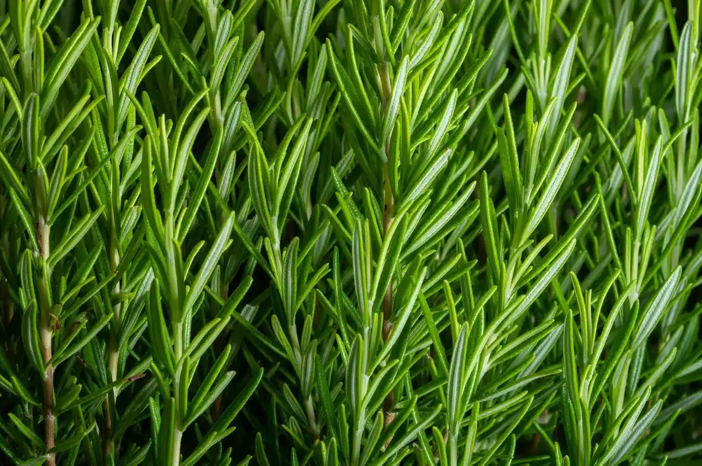
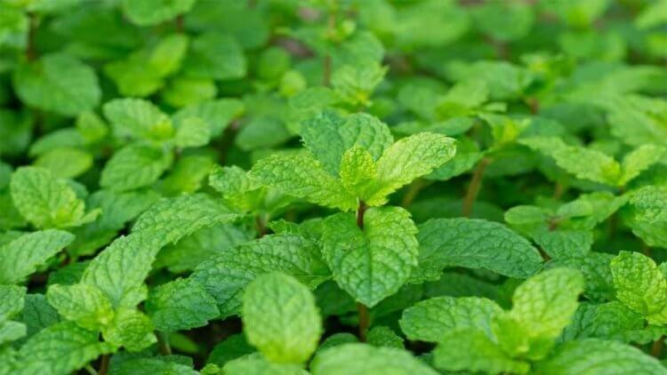
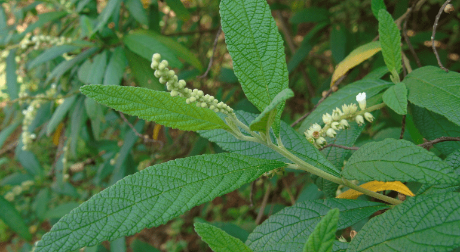

Calmantes e Sono
Perca de peso
Digestivos

Imunidade
Calmantes e Sono
Perca de peso
Digestivos
Imunidade
Conhecida por tratar, queimaduras, também era usada por Cleópatra em sua rotina de beleza.
Nativo da Amazônia, suas sementes têm até duas vezes mais cafeína que o café.





| Planta | Calmante | Digestivo | Anti-inflamatório |
|---|---|---|---|
| Camomila | ✔ | ✔ | - |
| Hortelã | - | ✔ | ✔ |
| Alecrim | - | ✔ | ✔ |